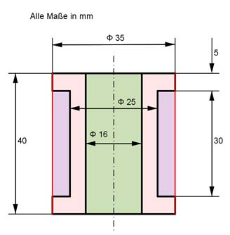

Aufgabe 107 Welche Masse m haben 100 der dargestellten Messinglagerbuchsen bei einer Dichte von 8,5 g/cm³?  V = 100 * VZylinder1 (rot) - VHohlzylinder (blau) - VZylinder2 (grün) r1 = 35 mm/2 = 17,5 mm VZylinder1 = л * r1² * h1 = л * 17,5² * 40 mm³ = 38 465 mm³ r2 = 25 mm/2 = 12,5 mm VHohlzylinder = л * (r1² - r2²) * h2 = л * (17,5² - 12,5²) * 30 mm³ VHohlzylinder = 14 130 mm³ r3 = 16 mm/2 = 8 mm VZylinder2 = л * r3² * h1 = л * 8² * 40 mm³ = 8 038 mm³ V = 38 465 mm³ - 14 130 mm³ - 8 038 mm³ = 16 297 mm³ = 16,3 cm³ m = 100 * V * р = 100 * 16,3 cm³ * 8,5 cm³ = 13 860 g = 13,86 kg